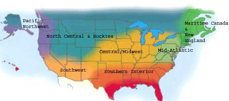

Do I detect the faintest smell of spring in the air or is it just wishful thinking? January catalog perusals have turned into seed orders arriving in the mailbox, and it’s time to get out the seed-starting trays. I wash them with castile soap or a mild (3-percent to 5-percent) bleach solution. Start early seedlings of pansies, petunias, onions, leeks, peppers and eggplant, as well as celery and celeriac. I plant a few tomatoes now, especially ‘Sungold’ cherry, and wait to sow my main crop in early April. It’s time to prune fruit trees - get outside and enjoy the sun’s warmth and fresh air. Save some shoots of last year’s growth (scions) for grafting in April. Triple wrap the scion wood in plastic and store in a refrigerator or cold cellar until needed.o not store scion wood in the same place as apples because they release ethylene gas, which can kill the wood.
- Roberta Bailey, FEDCO Seeds, Waterville, Maine.
Are your seeds ordered yet? You may face availability problems if you procrastinate! February is the time to start peppers, broccoli, cauliflower, cabbages and eggplant in flats. (Our favorite homestead peppers are ‘Doe Hill Golden Bell’ and ‘Aji Dulce.’) Begin planting leafy greens in March, but do so sparingly - planting a few seeds each week is the key. Red mustard and lettuces add a colorful twist to the salad mix. Wait until mid-March to start the main crop of tomatoes. When the whippoorwill sings, begin transplanting the earliest brassicas, greens and tomatoes outside under row covers.
Do you want to reclaim an area overrun with blackberries, kudzu or Jerusalem artichokes? Scrounge up some sturdy fencing and buy a piglet or two. They will turn the old established roots into meat, while ridding your soil of weeds and increasing the soil’s nutrient levels. The plot will be the star of your garden next year.
- Cricket Rakita, Southern Exposure Seed Exchange, Mineral, Va.
Starting tomatoes from seed? Sow them six to eight weeks before the last expected frost and keep them between 75 and 85 degrees until they germinate. Keep them in strong sunlight or fluorescent light. Pepper seeds can be sown at the same time, but they take longer to develop strong roots. Wait until four weeks past the last frost date to set transplants out into the garden. Garden peas like cool weather, so they should be sown six weeks before the last spring frost. do not over-fertilize or blossoms may drop. Get those pea trellises up, too. Even if the variety you plant isn’t supposed to need staking, it will produce better if it has support.
- Lori Hardee, Karen Park Jennings, Park Seed Co., Greenwood, S.C.
There’s a temptation to “jump the gun” and plant the tomato patch in February - just remember there’s always the chance for a late freeze in March, and these early plantings don’t seem to last as long. If you give in, add a later planting to continue the tomato harvest into August. ‘Dona,’ ‘Carmello’ and ‘Champion’ are varieties that are hard to beat. The giantfruited varieties - ‘Brandywine,’ ‘Beefsteak’ and the like - are usually poor producers on a yield-per-plant basis. Sow beans and corn throughout March, and transplant peppers and eggplant later in the month, but wait until it really warms up in April for Southern peas and okra. If you’re working up new beds, don’t forget the compost. A few inches incorporated into the soil can work wonders. Top-dress fruit trees with compost, too.
- Bill Adams, Burton, Texas.
While you are ordering your seeds, starting mix, trays and tools, why not take some time to think about pest problems? Combining pest-control products with your seed order will save shipping costs. More importantly, you will be prepared when the uninvited guests attack, instead of panicking and rushing out to buy whatever you can find. Thinking ahead also can help you take effective action when insects and disease organisms are at the most vulnerable stages of their life cycles - or time plantings to avoid damage altogether.id you notice bird damage last summer or hear the sound of squirrel laughter and find paw prints where sunflower seeds used to be? Planning your garden to avoid straight rows, or mixing vegetables with flowers may confuse animals enough to spare some plants for you. For more certain protection, order plastic mesh. I have mine on hoops like a mini-greenhouse and now enjoy whole heads of lettuce instead of squirrel-created “frisée.”
- Connie Dam-Byl, William Dam Seeds Ltd., Dundas, Ontario.
This time of hope and lengthening days just may be the most wonderful season for cold-country gardeners. We are still harvesting Brussels sprouts, kale and evergreen bunching onions from beneath receding snows. The deep, sweet smell of earthy potting soil fills the kitchen as we prepare flats to receive pepper, tomato and cabbage-family seeds. Our tried-and-tested potting mix is equal parts compost, peat moss and coarse sand. Flats are kept in a 70-degree location, covered with a layer of wet newspaper to insure good germination. Once the little green arches of new plants poke through the soil, provide lots of direct light. Transplant to a larger container before they become root-bound, which slows their growth and loses precious momentum. If your tomatoes become leggy, remove the first set of leaves and transplant them deeper in the soil. The leggy stem will become part of a healthy root system.
- Bill McDorman, Seeds Trust, High Altitude Gardens, Hailey, Idaho.
The calendar may say winter, but it’s time to think spring. Peppers can be started in late February and tomatoes in March. After seedlings germinate, adequate light and moderate temperatures will assure sturdy plants. Starting transplants takes a little time and planning, but growing your own plants is richly satisfying and gives you an interesting and economical plant selection. If you need more rosemary or lavender plants, peg a few branches to the moist ground and in a few months they’ll root and form a new plant. Take advantage of breaks in our winter weather to get after the early weeds and sow seeds for spring greens and lettuces. One way to keep ahead of weeds is to get your garden favorites growing early. Keep ahead of the slugs with one of the new nontoxic iron-based products such as Sluggo.
- Rose Marie Nichols McGee, Nichols Garden Nursery, Albany, Ore.; Josh Kirschenbaum, Territorial Seed Co., Cottage Grove, Ore.
Excitement builds in February as we watch our fall-collected seed turn into seedlings in the greenhouse. We divide yacon roots for seedling production - this sweet, crunchy tuber is also known as Bolivian sunroot and has been a staple of the Andean people for centuries. Onions and leeks are seeded into a potting mix of coir (coconut husk fibers), compost, sand, alfalfa meal, cottonseed meal and perlite. Meanwhile, seeds of lobelia, echinacea, culver’s root and astragalus make their way to the refrigerator in wet, moist sand for 30 days of stratification before they are patted into the surface of our potting mix. This process improves germination for these beautiful perennials, which are also very effective in attracting beneficials. Out in the garden, it is time to plant snap and snow peas for a June harvest of these delicious pods. We peruse garden catalogs for anything we forgot - and hope they haven’t sold out!
- Erica Renaud, Seeds of Change, Santa Fe, N.M.
|
 |
|
|